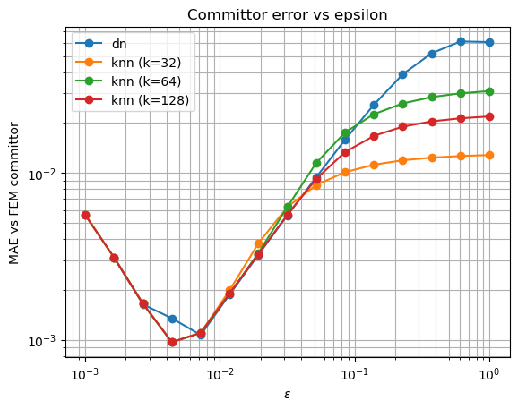
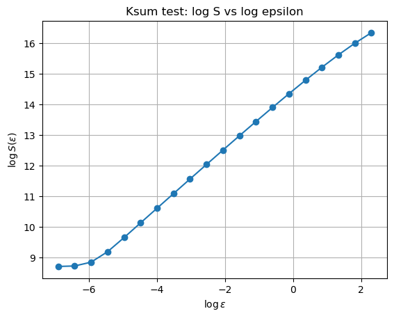
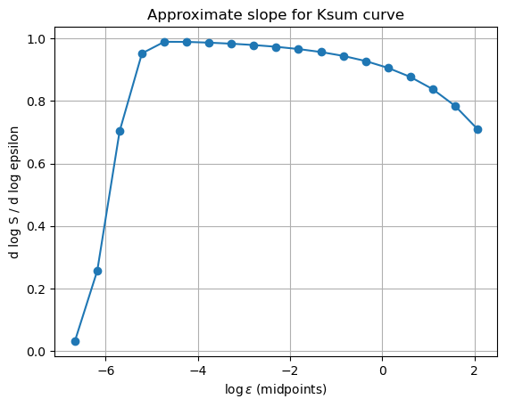
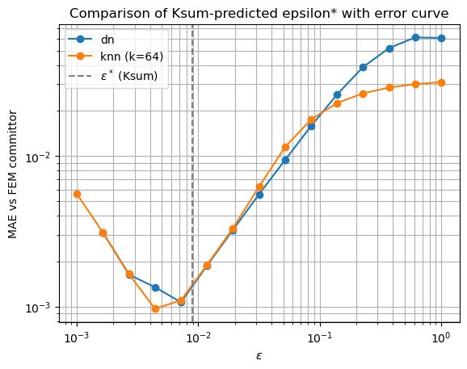
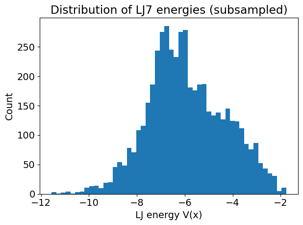
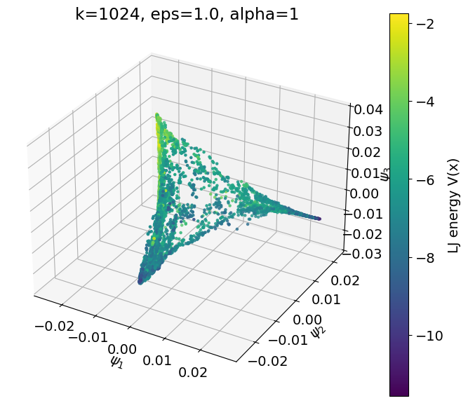
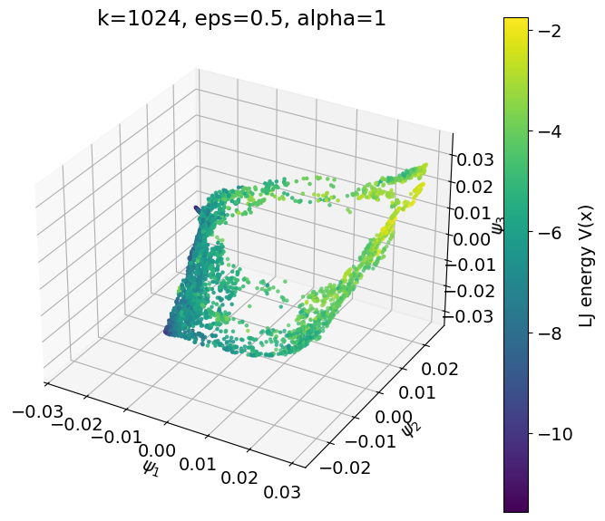
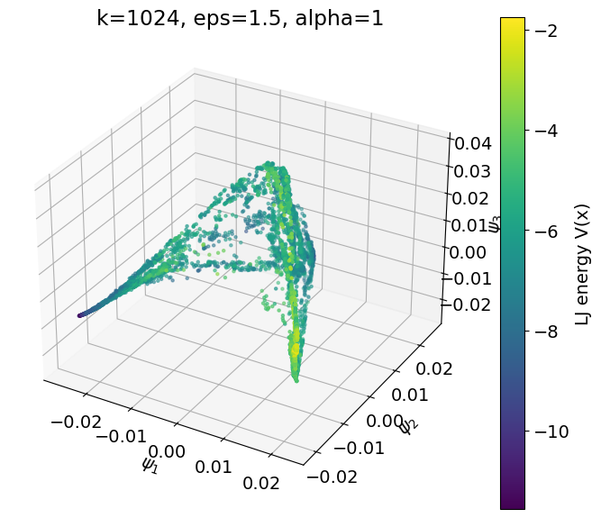
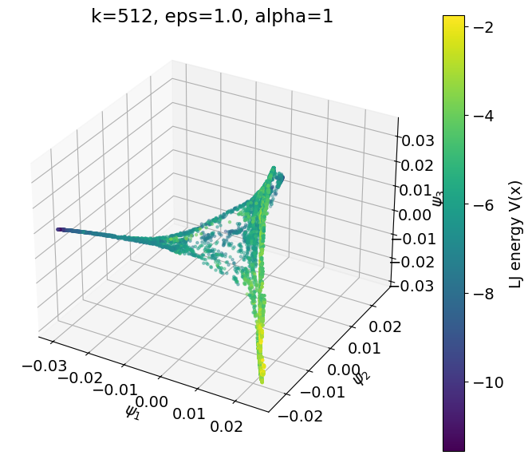
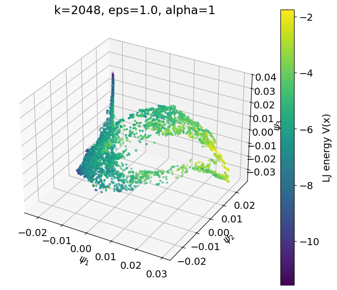

Diffusion Maps for Committors and Molecular Manifolds
This project studies diffusion-map methods in two settings that share the same core idea: build a data-driven operator from a point cloud and use it to recover physically meaningful low-dimensional structure. In the first part, I use target-measure diffusion maps to solve a committor problem on the Face potential and compare the result against a finite-element reference. In the second part, I use diffusion maps to recover the residence manifold of a 7-atom Lennard-Jones system after a symmetry-respecting feature transform.
Main role: build and evaluate diffusion-map pipelines for both committor computation and molecular manifold discovery, with emphasis on kernel bandwidth selection, graph sparsification, Ksum diagnostics, and geometry-aware feature design.
Part I: TMDmap for a Committor Problem
The first task considers the overdamped Langevin committor problem on the Face potential at inverse temperature \(\beta=3\):
\[ \nabla \cdot \left(e^{-\beta V(x,y)}\nabla q(x,y)\right)=0, \qquad q|_{\partial A}=0, \qquad q|_{\partial B}=1. \]
The goal is to approximate the generator of the overdamped Langevin dynamics on a point cloud and then solve the discrete committor equation \(L_{\varepsilon}q=0\) with Dirichlet conditions on the metastable sets. I replaced the original delta-net dataset with FEM mesh points from FEM_pts_comm.npz and treated the supplied FEM committor values as ground truth for evaluation.
Bandwidth Study and Error Curves
I implemented two versions of the diffusion-map operator. The first is the distance-neighborhood version supplied in the notebook. The second is a k-nearest-neighbor variant that keeps only the largest kernel entries in each row, symmetrizes the resulting sparse matrix, and then applies the same TMDmap normalization. I tested \(k=32,64,128\).
The primary evaluation metric is mean absolute error against the FEM committor. Across \(\varepsilon\in[10^{-3},1]\), all methods exhibit the expected U-shaped error curve: very small bandwidths make the graph too sparse and unstable, while very large bandwidths oversmooth the operator. The minimum occurs at an intermediate scale around \(\varepsilon\approx 6\times10^{-3}\) to \(10^{-2}\). The knn variants with \(k=32\) and \(k=64\) slightly outperform the dn version near the optimum, although all methods are competitive in the best region.

Mean absolute error between the diffusion-map committor and the FEM committor across kernel bandwidth values.
Ksum Test for Bandwidth Selection
A central part of the project is the Ksum scaling test, which provides a data-driven way to choose \(\varepsilon\) without access to the FEM solution. For each bandwidth, I compute
\[ S(\varepsilon)=\sum_{i,j}\exp\left(-\frac{\|x_i-x_j\|^2}{\varepsilon}\right). \]
For data supported on a \(d\)-dimensional manifold, the slope \(d\log S / d\log \varepsilon\) should approach \(d/2\). In this case, the slope stabilizes near 1, consistent with the intrinsic dimension \(d=2\). Selecting the bandwidth at which the slope is closest to 1 yields the estimate \(\varepsilon^\ast\approx 3.36\times10^{-3}\).

\(\log S(\varepsilon)\) versus \(\log \varepsilon\).

Numerical slope of \(\log S\) with respect to \(\log \varepsilon\), stabilizing near the intrinsic-dimension prediction.
When plotted against the actual MAE curve, the Ksum-predicted \(\varepsilon^\ast\) lands very close to the true minimizer region. That is important because it shows the bandwidth-selection heuristic is practically useful even without access to ground truth labels.

Comparison between the Ksum-predicted \(\varepsilon^\ast\) and the observed committor error curve.
Part II: Diffusion Maps for the LJ7 Residence Manifold
The second task studies a 7-atom Lennard-Jones system in two dimensions. Each configuration is a point in \(\mathbb{R}^{14}\), with potential energy given by the pairwise Lennard-Jones interaction. Rather than applying diffusion maps directly to raw coordinates, I first map each configuration to the sorted vector of coordination numbers. This feature map removes translational, rotational, and permutational symmetries while preserving the physically relevant local structure of the atomic arrangement.
That symmetry-aware feature design is essential. Without it, the geometry of the point cloud would be contaminated by nuisance degrees of freedom; with it, the embedding becomes much more interpretable as a representation of genuine molecular state variation.
Energy Landscape and Embedding Quality
After feature construction, I compute the Lennard-Jones energy and use it as the coloring variable throughout the embedding analysis. The energy histogram shows that most sampled configurations occupy a moderately low-energy band, with a thinner tail extending into higher-energy states.

Distribution of Lennard-Jones energies in the subsampled LJ7 dataset.
I then apply the knn diffusion-map algorithm with \(\alpha=1\), extract the first three nontrivial eigenvectors \((\psi_1,\psi_2,\psi_3)\), and search over \(k\) and \(\varepsilon\). Among all tested parameter pairs, \((k,\varepsilon)=(1024,1.0)\) produces the cleanest embedding: a smooth, approximately two-dimensional surface in \(\mathbb{R}^3\) whose branches vary coherently with potential energy.

Best diffusion-map embedding for the LJ7 dataset, obtained with \(k=1024\) and \(\varepsilon=1.0\), colored by Lennard-Jones energy.
Parameter Sensitivity
Fixing \(k=1024\) and varying the bandwidth confirms that \(\varepsilon=1.0\) is the most balanced choice. At \(\varepsilon=0.5\), the embedding becomes slightly contracted; at \(\varepsilon=1.5\), it is visibly oversmoothed. Varying \(k\) at fixed \(\varepsilon=1.0\) shows a similar tradeoff: \(k=512\) produces more local noise and discontinuity, while \(k=2048\) blurs meaningful geometric distinctions. These experiments are useful because they demonstrate that the final embedding quality is not accidental but tied to concrete graph-construction choices.

Embedding with \(k=1024\), \(\varepsilon=0.5\): slightly contracted geometry.

Embedding with \(k=1024\), \(\varepsilon=1.5\): more pronounced oversmoothing.

Embedding with \(k=512\): more local noise and small discontinuities.

Embedding with \(k=2048\): smoother but less geometrically expressive.
Takeaways
This project makes two points clearly. First, for committor computation on point clouds, diffusion-map accuracy depends strongly on the bandwidth and graph construction, and the Ksum test provides a practical unsupervised way to choose \(\varepsilon\). Second, for molecular systems, diffusion maps become much more informative when paired with a feature map that respects the physical symmetries of the problem. In both tasks, the main contribution is not only running the algorithm, but diagnosing how the graph, bandwidth, and representation choices determine the quality of the final low-dimensional structure.
Back to Projects